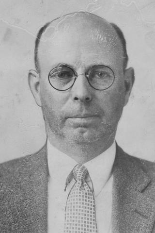
James Howard Snook
Does this man wander Greenlawn Cemetery after dark? He's been dead since 1930 and he's buried in an anonymous grave--a grave disguised so his headstone wouldn't be defiled. This nebbishy, unassuming little bald guy, formerly head of the Department of Veterinary Medicine at OSU, was tried, convicted, and executed for murdering a 29-year-old former student named Theora Hix. It was Columbus's own Trial of the Century.
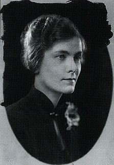
Theora Hix
The details which emerged during Dr. Snook's trial were too scandalous for any newspaper to carry, but the court records remain to tell what's still a pretty sordid story, though their shock at the concept of fellatio is so hilarious you have to read it to believe it. The two met Hix when she was 22 and a student under the Professor, who was, to say the least, a distinguished member of the university community. Not only was he head of the department, he was the inventor of the Snook Hook, a medical device still in use in spaying procedures, and he was a world champion pistol shooter who won a gold medal for the United States at the 1920 Olympics in Antwerp, Belgium. He also had a wife and a young daughter.
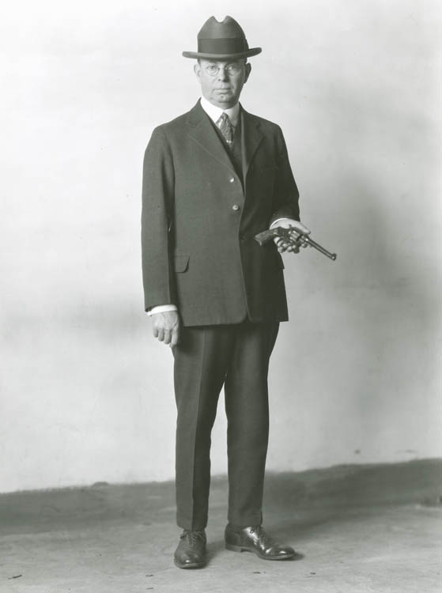
Still, none of that stopped him from carrying on an affair with Theora Hix for the next three years. Theora was a wild girl for her era, or so they portrayed her in court; she introduced Dr. Snook to the scandalous pracitce of oral sex, and partook liberally of cannabis indica, cantheris vesicatioria (aka Spanish Fly), veronal, barbital, and cocaine. Snook helped her procure some drugs from the OSU research pharmacy, and occasionally took some himself. If you believe Snook at his trial, Theora Hix completely corrupted him.
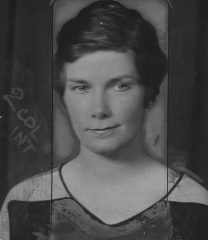
Meanwhile, Theora had another lover close to her age, Marion Meyers, whom she would petulantly remind Snook had a much bigger cock than he did. She said Snook didn't satisfy her, but she still met him frequently in their "love nest," a room in a boarding house at 24 Hubbard Avenue in the Short North, for sex and drugs. She apparently became more and more jealous of Snook's family obligations and resented him for putting her off from time to time. Again, this is all Snook's testimony; Theora might have had a much different story to tell.
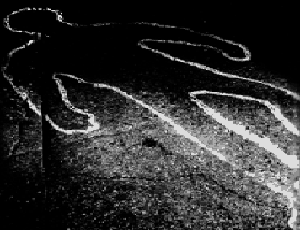
On June 14, 1929, two sixteen-year-old boys found Theora Hix's body, beaten and slashed, at the rifle range on Fisher Road near McKinley. Snook had been teaching her to shoot at this very range. The police picked up Marion Meyers, but his alibi checked out; by June of 1929 his affair with Theora had been over for a year and he was engaged to someone else. That left James H. Snook the prime suspect, connected to her when the manager of the Hubbard Avenue boarding house recognized Snook's picture.
The police learned that Snook had had his car thoroughly washed out the day after the murder, a fact he denied. During his questioning by police, which lasted nineteen straight hours beginning at 10AM on June 20, he was slapped across the face by city prosecutor Jack Chester and generally beaten into a confession. (This was the good old days, remember, before Miranda v. Arizona.) Faced with blood evidence on his clothing and still left in his car, as well as the lack of an alibi, Snook was pretty well caught anyway. They also found the murder weapons in Snook's possession: a ball peen hammer and a pocket knife, both splattered with Hix's blood.
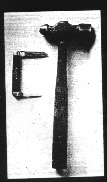
The trial lasted less than thirty days, beginning in July of that year. The gallery was always packed; some people arrived as early as 3AM, lining up outside the courthouse in the hope of getting a good seat. Those who did heard the sordid details the newspapers would deny them--especially when Snook himself finally took the stand. The story he told, and the Theora he described, have been dismayingly taken at face value over the years, first by the contemporary press and therefore most histories of the case. Although his description of the murder itself is treated as dubious at best, he paints a picture of Theora as a whorish seductress who led him astray with her wicked "sex perversions" and drug habits. She was in fact a young student working at the veterinary school (in the now-demolished Neil & 17th Building) who ended up in a relationship with a professor she worked for. Most of the drugs she "introduced" him to were ones he obtained from the OSU medical school. Much of his testimony seems unfairly biased against the victim, who he was trying to portray as the one responsible. Very lame.
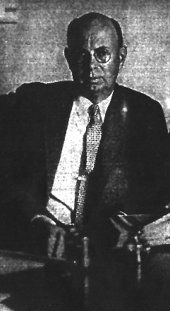
Dr. Snook described Theora Hix as a vixen who was unsatisfied by "conventional sex," and who introduced him to every bad thing he'd never done before. They rented the room on Hubbard to facilitate their trysts, and carried on an affair for three years, during which her behavior became increasingly erratic and her appetites more voracious. On June 13, the night in question, they met to make love in a secluded spot, and he suggested the Scioto Country Club, but she insisted on someplace more secluded, saying, "I would like to go someplace further where I can scream." Snook drove her to the rifle range on Fisher Road.
After unsuccessful attempts at intercourse in his small car ("Unsatisfactory for both of us," Snook said), he wanted to leave, reminding her that he had to take his family to his mother's house for the weekend. Theora became enraged, saying, "Damn your mother. I don't care about your mother. Damn Mrs. Snook. I'm going to kill her and get her out of the way." Snook cried on the stand, recalling Theora's threats against the life of his daughter.
What follows is Dr. Snook's testimony about what happened next:
"She said, 'You have got to help me out.' She grabbed open my trousers and went down on me then, and she didn't do it very nicely and she bit me and got hold of my privates and pulled so hard I simply could not stand it. I got hold of something out of this kit (in the back seat of the car) and hit her with it. I finally got her loose, very nearly twisted her arm off and she sat up there a little bit and said, 'Damn you, I will kill you, too.'
"She grabbed her purse and slid out of the [car.] I was in so much pain and when I tried to straighten up, all at once it flashed through my mind that she was getting out and I knew if she got out she would shoot me.
"I hit her once then, I hit her again and she slid right out on the ground and I followed her out. I got up behind her and hit her once more with the hammer and she went down and her head hit against the running board of the [car], and that is all I can remember of hitting her."
Snook claimed to have no memory of stabbing her or slashing her throat. On cross examination he said he hadn't mentioned the sexual details before because "I was ashamed of it, ashamed of any sex perversion because I never knew anyone that would do that before." He should have waited about thirty-five years.
The jury took twenty-eight minutes to find James Howard Snook guilty on August 14, 1929. He was remanded to the State Penitentiary on Spring Street, where he sat on death row until his appeals ran out. On February 28, 1930, he was put to death in Ohio's electric chair. After a quiet, pre-dawn service by Reverend Isaac Miller of the King Avenue Methodist Church, he was laid to rest in his nearly-unmarked grave in Greenlawn Cemetery.
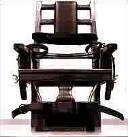
So...did he do it? As much as I hate coerced confessions and brief trials tainted by puritan jurors' ideas about the evils of cocksucking, as well as the insanely short period of time death row inmates were given to file their appeals back then...yeah, he did it. And his testimony is so lame it turns your stomach, doesn't it? He thought Theora was going to kill him and his wife and daughter--yeah, sure. I think it's a safe bet that there's a real murderer lying beneath a plot of dirt somewhere in Greenlawn Cemetery. An unlikely murderer, sure, with his bald head and glasses and Ph.D. and Olympic gold medal, but a murderer all the same. And some say he walks the grounds at night, distinctive in his fedora and glasses, perhaps remorseful for the disgraceful turn his promising life took in its final years, maybe thinking about all he lost by pursuing one of his students.
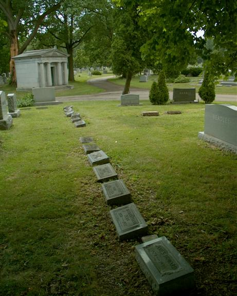
Photo courtesy OES
If Dr. Snook's revenant mourns at his own gravesite then he spends his time in the spot pictured above--Section 87, five over from the driveway in grave plot 243. As it turns out, he was given a stone, but they disguised his true identity by leaving off his last name.
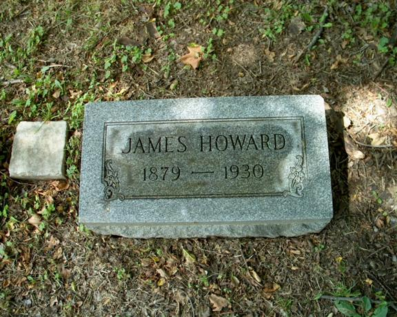
Photo courtesy OES
Learning the true status and/or location of the body of an executed criminal can be a difficult chore; in this case it was Jason Robinson and the guys at the Ohio Exploration Society who did the work and cracked the wall of secrecy that always shrouds the aftermath of a state-sanctioned execution. After Timothy McVeigh was given the needle in the Federal death house at Terre Haute, Indiana, great pains were taken to keep what happened to his body a secret. As you can read in this section of Find A Death.com, his body was processed by a local funeral home, cremated, and given to his lawyers. They spread some of his ashes at locations he'd designated in Albany, New York, including a school and a Burger King (weird, I know) before his parents received equal parts of what was left. It's hard not to wonder what they did with it. I kind of feel like that kind of thing might be best left to his remaining family and...well, lawyers, people who will carry out such a mournful wish, and not go around picketing or pissing on ashes where they were scattered. And there are people who will do that kind of thing.
Cremation seems to be a much more popular option nowadays, and "potter's field"-type cemeteries are becoming a thing of the past as society becomes more and more accepting of the idea of incinerating the unknown and unclaimed among the deceased. One imagines a convicted murderer would have a very hard time finding a churchyard willing to take his body. When Columbus's municipal cemetery agreed to bury James H. Snook in his family's plot, they did their best to keep his grave anonymous. Below is a scan of his Greenlawn Cemetery burial record.
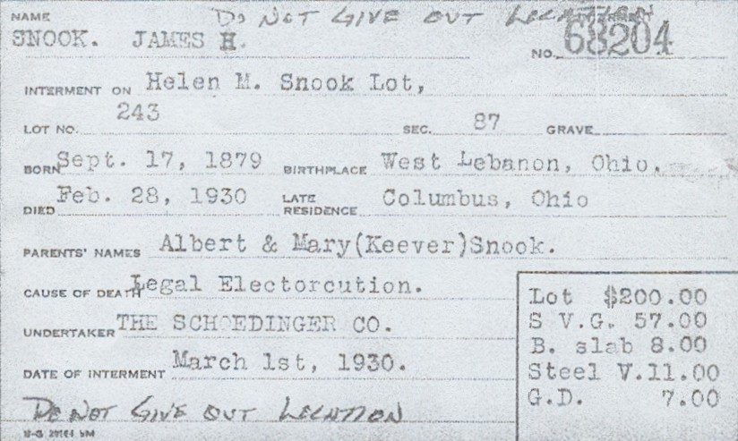
No. 68204. Cause of Death: Legal Electrocution. Do Not Give Out Location.
At any rate, congratulations are due to the Ohio Exploration Society for their fine work in discovering the true location of Snook's secret grave. Whether or not the Professor truly haunts Columbus's massive cemetery is less easily found out. Go left at the place where the main path forks in front of the cemetery chapel and head south of the moss-covered swamp, to Section 87, Plot 243, and look for him one evening before the gates are locked up. If he does appear with sadness etched on his face, who can blame him? He has a lot to regret.
Incidentally, if anyone can tell me of anyone else who met a similar end in both ways, I would very much like to know about it. By this I mean executed murderers and where they have been buried. Are they marked by abbreviated versions of their names like Snook, or perhaps just under a last name? (I understand a simple flat stone reading "Oswald" is all that marks the grave of President Kennedy's accused assassin.) Maybe a pseudonym, or just an image of eternal peace? Or are they buried like anybody else? I'm especially interested in finding at least one more like George H. Snook in Greenlawn Cemetery itself; with the sheer number of graves, and the place's status as the city's all-purpose graveyard during the Penitentiary Annex years, there are bound to be a few others. Let me know, would you, if you know something about this?
Ohio Exploration Society: Doctor James Howard Snook at Green Lawn Cemetery
Short North Gazette Article: "The Trial of Dr. James Howard Snook."
Ohio State University School of Veterinary Medicine: Dr. James Howard Snook
Back
forgottenohio@yahoo.com
Sources
Compton, Richard. "Murder Most Foul: The People vs. James Snook." Timeline. September/October 1999, vol. 16 no. 5.
Patzer, Nancy. "The Trial of Dr. James Howard Snook," Parts I & II. Short North Gazette. October & November 1999.